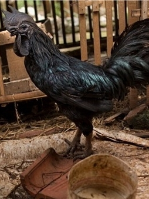
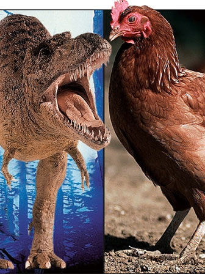

There’s a rare breed of chicken from Indonesia that is completely black
including the feathers, beak, and organs, due to hyperpigmentation.
They can be sold for $2,500.
The color of the egg depends on the chickens earlobes.
Red ear lobed chickens lay brown eggs, while white ear lobed chickens lay white eggs.
Chickens can remember over 100 different faces of people or animals.
In order to attract hens, roosters will do a dance called “tidbitting”
involving moving their head up and down, waddling, and making certain sounds.
Chickens have three eyelids.
When chickens feel stressed, they start to lose their feathers.
Those look pretty relaxed...
It only takes about 26 hours for a hen to produce an egg,
and 21 days for the egg to incubate and hatch.
Baby chicks can develop object permanence as soon as 2 days old,
while it takes human babies around 7 months.
Chickens can taste saltiness, but not sweetness.
At least, there is some fun!
Which come first: chicken or egg ?
Although the question is typically used metaphorically, evolutionary biology provides literal answers,
made possible by the Darwinian principle that species evolve over time,
and thus that chickens had ancestors that were not chickens,
similar to a view expressed by the Greek philosopher Anaximander when addressing the paradox.
Chickens have prehistoric roots and are the closest living relative of the Tyrannosaurus Rex.
ONE EXTRA!
Here's the video where Vsauce pecks up the subject.
Sources: